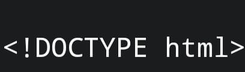
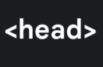
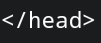
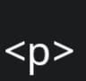
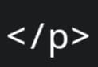
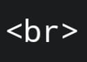

Aqui você encontra sugestões de tags de HTML, CSS, Python e JavaScript. Além disso, textos breves sobre programação. Tenha uma boa experiência!
Programação é o processo de criar instruções que um computador pode seguir para realizar tarefas específicas. É como ensinar uma máquina a fazer o que queremos, utilizando uma linguagem que ela entende. Existem várias linguagens de programação, como Python, JavaScript e Java, cada uma com suas particularidades.
Variáveis: São como caixas onde você pode armazenar informações, como números ou textos. Por exemplo, você pode criar uma variável chamada "idade" e armazenar um número nela.
Condicionais: Essas instruções permitem que seu programa tome decisões. Por exemplo, você pode dizer: "Se a idade for maior que 18, então a pessoa é adulta."
Laços de Repetição: São usados para repetir ações várias vezes. Por exemplo, você pode querer imprimir uma mensagem dez vezes.
Funções: Funções são blocos de código que realizam uma tarefa específica e podem ser reutilizados em diferentes partes do programa.
A programação é uma habilidade poderosa e criativa! Com prática e paciência, você pode criar jogos, aplicativos e muito mais. Comece com pequenos projetos e vá aumentando a complexidade à medida que se sentir mais confortável!
<!DOCTYPE html>: é usada para informar ao navegador que o documento está escrito em HTML5, a versão mais recente da linguagem. É essencial colocar esta declaração no início de todo documento HTML, pois ela ajuda o navegador a renderizar a página corretamente.
<head>: conhecida como cabeça, serve para inserir informações sobre o documento, como título, dados para mecanismos de busca e links para arquivos CSS e JavaScript.
Tag de fechamento da cabeça:
<p>: conhecido como parágrafo, é um elemento de bloco, o que significa que ocupa toda a largura disponível e cria uma quebra de linha antes e depois do conteúdo.
Tag de fechamento para o parágrafo:
Falando em quebra de linha:
<br>: é usada para inserir uma quebra de linha em um texto. Ela é uma tag vazia, ou seja, não precisa de uma tag de fechamento.
